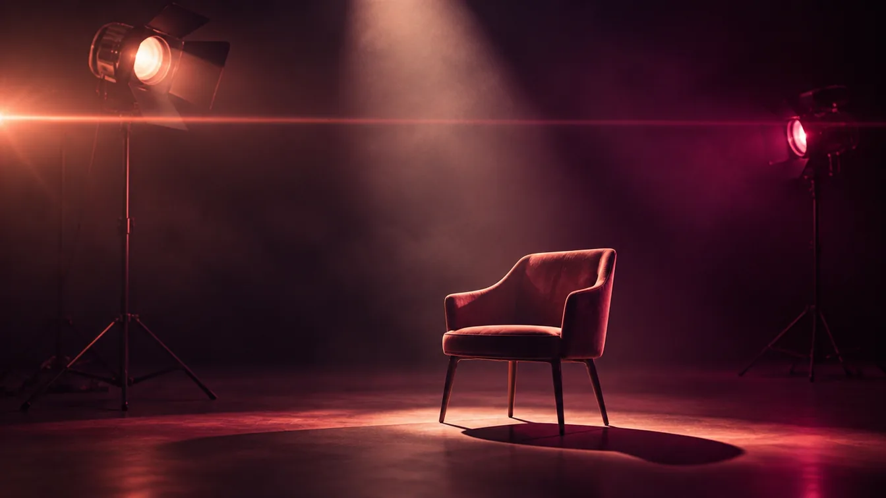

T2I は「テキストから画像」の略です。このタブの前半は、映画の撮影で使われる光・レンズ・構図の技法を、画像生成AIに伝えるためのコマンドです。技法の名前を知らなくても、選ぶだけで使えます。
人物と全体の質感
シネマティックポートレート 無料のおすすめ
映画のワンシーンのような人物写真です。被写界深度（ピントの深さ）と照明を調和させます。構図、照明、レンズを、選択肢から組み合わせられます。
- 選ぶ・書く項目：被写体、構図、照明、レンズ
70mm 大判フィルムの質感
圧倒的な解像度と、ごく細かいフィルムの粒子で、壮大なスケール感を出します。
- 選ぶ・書く項目：被写体、構図、照明
光の演出
明暗の強い光（キアロスクーロ）
強い光と深い闇が、彫刻のように輪郭を切り取る、重厚でドラマチックな光です。
- 選ぶ・書く項目：被写体、照明
レンブラント照明
斜め45度からの光で、影の側の頬に「光の三角形」ができる、古典的な肖像の照明です。
- 選ぶ・書く項目：被写体
ネオンの夜（サイバーパンク） 無料のおすすめ
夜の雨に濡れた路面が、シアンとマゼンタの光を反射する、近未来の雰囲気です。
- 選ぶ・書く項目：被写体
光の筋（薄明光線）
空気中のほこりや霧を貫いて差し込む、神聖で荘厳な光の筋です。森や、窓から差す光に。
- 選ぶ・書く項目：被写体
レンズの演出
横長レンズ（アナモフィック） 無料のおすすめ
映画の大作のような、横長の青いレンズフレア、楕円のぼけ、横に広い画面（2.39:1）の迫力を出します。
- 選ぶ・書く項目：被写体、照明
前後ダブルピント（スプリットディオプター）
手前のごく近くの被写体と、奥の被写体の、両方にピントが合う、独特の緊張感のある画です。
- 選ぶ・書く項目：被写体
ミニチュア風（ティルトシフト）
ピントの合う範囲をごく狭くして、本物の街や風景を、おもちゃのジオラマのように見せます。
- 選ぶ・書く項目：対象（交差点／港／雪の村／空港）
構図と背景
左右対称の構図
厳密な左右対称と、パステルカラーの、童話のようでスタイリッシュな画です。
- 選ぶ・書く項目：被写体、構図
額縁構図（フレーム・イン・フレーム）
窓、ドア、アーチ越しに被写体をとらえ、のぞき見のような視線と、奥行きを出します。
- 選ぶ・書く項目：被写体、照明
無人の背景美術（合成用）
あとから人物やCGを合成するための、質の高い、人のいない背景です。
- 選ぶ・書く項目：場所（路地／霧の森／研究所／洋館）、構図、照明、レンズ
上手に使うコツ
- ほとんどのコマンドで、「🚫 ネガティブプロンプト」（出てほしくないもの）と、「📷 参照画像」が使えます（整え方・参照画像）。
- 選択肢を日本語で選ぶと、英語の表現が入ります。画像・動画のAIは、英語のほうが意図が伝わりやすいことが多いです。
- 1回に変えるのは、1項目だけ。どの言葉が効いたのかが、分かりやすくなります。
光やレンズの言葉の意味は、画像生成AIのプロンプトのコツと、動画生成AIへの指示の書き方でも解説しています。
使い方は、どのコマンドも同じです。「T2I（画像）」タブを開き、コマンドの行を押して、選択肢を選び、空欄に書き込みます。プレビューで確かめてから、「⚡ 挿入」で、開いているAIの入力欄に入れます（はじめての使い方）。